Wakacje składkowe: заявление RWS в eZUS
Один месяц без взносов на социальное страхование. Дальше проведём вас по шагам. Всё, что нужно, – на экране или в подсказке.
Не нашли свой экран или что-то не сходится – напишите в Telegram: @KorneVa_OK. Ответим по вашему шагу.
Содержание
Вход в eZUS
Экран в eZUS: «Zaloguj do PUE/eZUS»
Открываем кабинет на zus.pl – дальше все экраны внутри него.
- На zus.pl нажать «Zaloguj do PUE/eZUS».
- Откроется страница входа: «Profil zaufany» – способ, которым входили в прошлый раз; ниже mObywatel («Polecany»), банковский вход и e-Dowód.
- Если у вас есть логин и пароль eZUS – на той же странице ссылка на форму «Zaloguj się do eZUS».
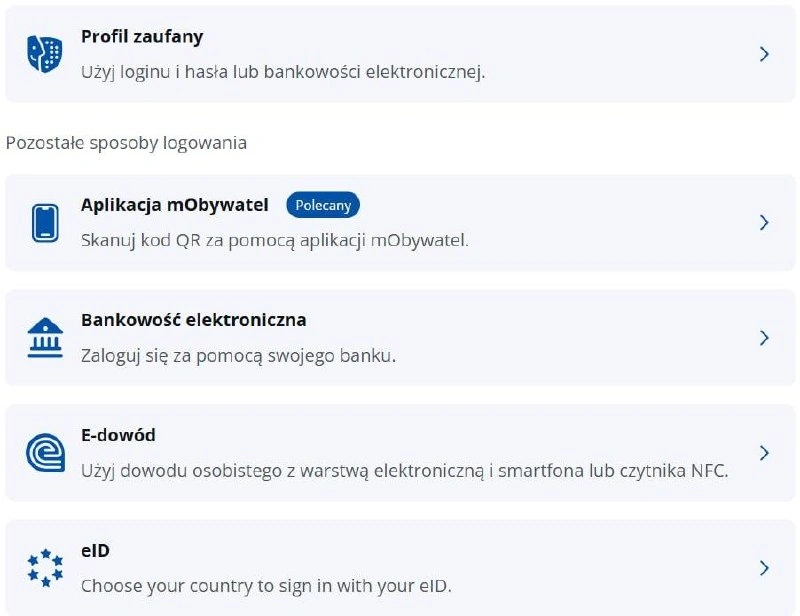
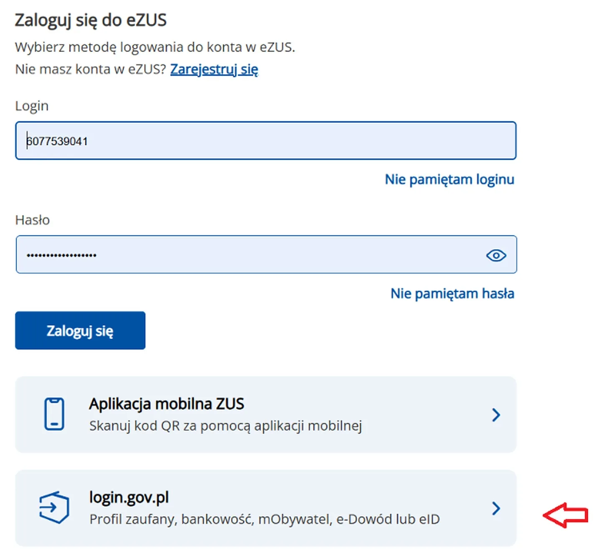
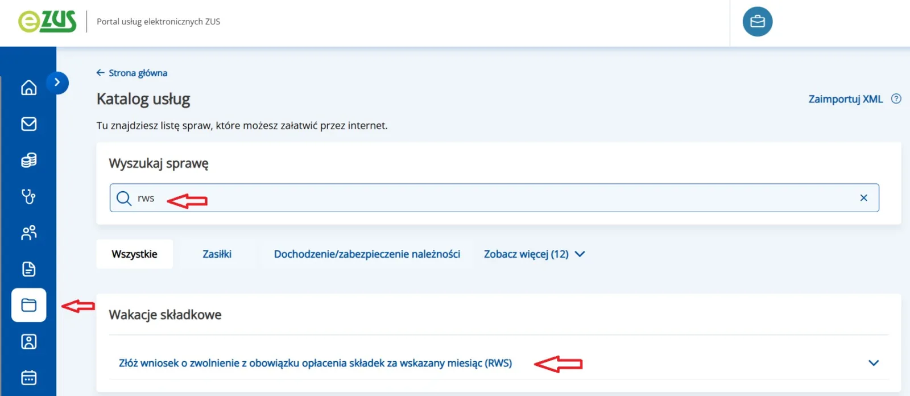
Общие данные и вид заявления
Экран в eZUS: «Informacje ogólne i wybór rodzaju wniosku»
Здесь выбираем, что именно подаем – RWS.
- В каталоге открыть карточку «Wakacje składkowe» и нажать «Przejdź do usługi».
- Rodzaj wniosku: «Wniosek».
- Нажать «Dalej».
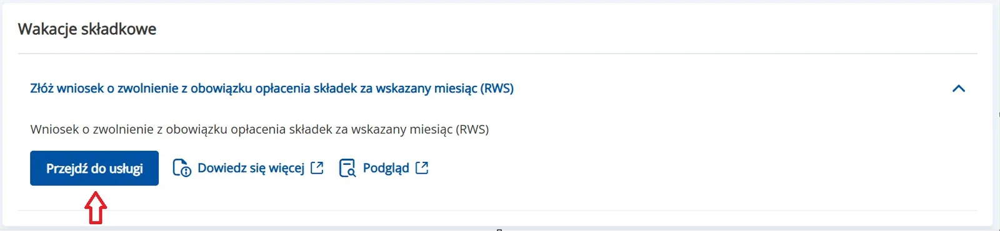
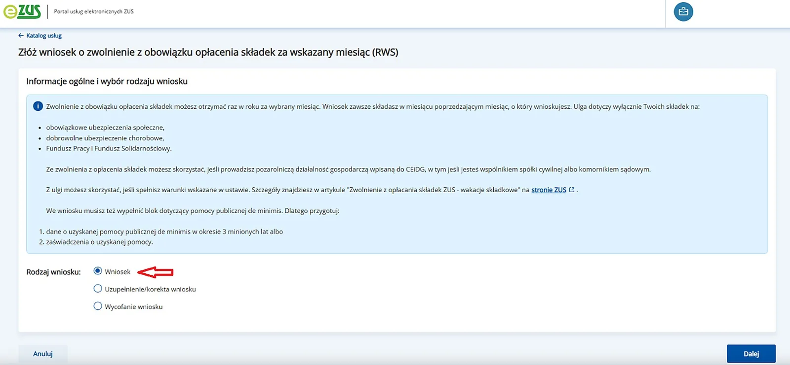
Данные плательщика
Экран в eZUS: «Dane płatnika»
Данные подставятся сами – их нужно только сверить.
- Сверить NIP, PESEL, имя и фамилию – или ввести NIP, имя либо фамилию вручную.
- Телефон – необязательное поле: можно оставить пустым.
- Нажать «Dalej».
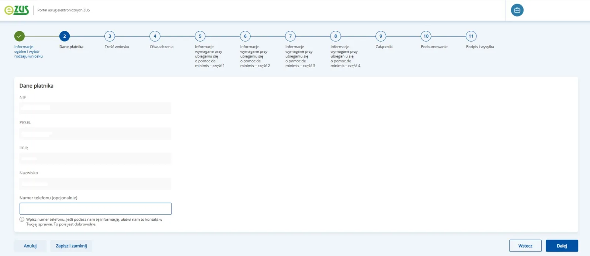
Месяц заявления
Экран в eZUS: «Treść wniosku»
Поле месяца уже заполнено – сверяем с тем месяцем, за который просим каникулы.
- Сверить месяц и год.
- Нажать «Dalej».
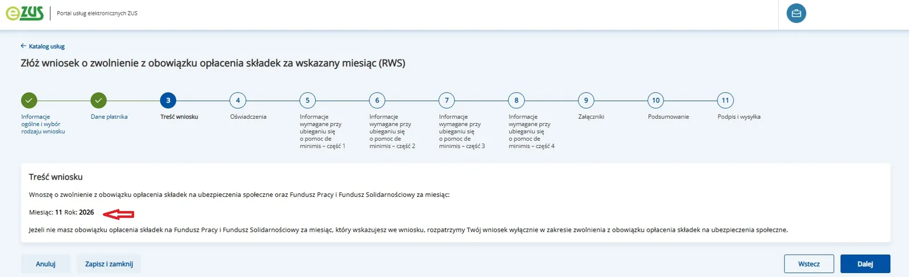
Заявления-подтверждения
Экран в eZUS: «Oświadczenia»
Три утверждения. Пункты 1 и 2 – только текст, выбирать там нечего: это заявления о доходе и о работе на бывшего работодателя. Выбор есть только в пункте 3 – про помощь de minimis.
- Пункт 3, «W okresie minionych 3 lat»: отметить, пользовались ли Вы помощью de minimis.
- Если «korzystałem» – ниже в блоке подтверждения выбрать «oświadczenie» и вписать общую сумму помощи в евро.
- Нажать «Dalej».
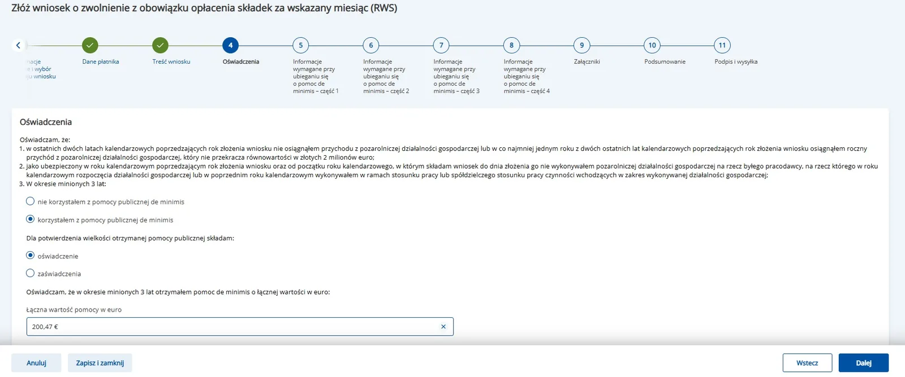
de minimis, часть 1: размер субъекта и PKD
Экран в eZUS: «Wielkość podmiotu i klasa działalności»
Здесь только размер субъекта и код деятельности.
- Wielkość podmiotu: «mikroprzedsiębiorca», если у вас микропредприятие.
Откуда сумма de minimis: её берут из справки SUDOP – пошагово это раздел Д1 ниже. Проверить свою помощь напрямую: sudop.uokik.gov.pl/search/aidBeneficiary.
- Klasa działalności: выбрать год и вписать код PKD без точек – например 6210B. Если помощь de minimis уже получали, здесь же вписываем сумму из справки – в евро, ровно как в документе (например, 200,47).
- «Dalej».
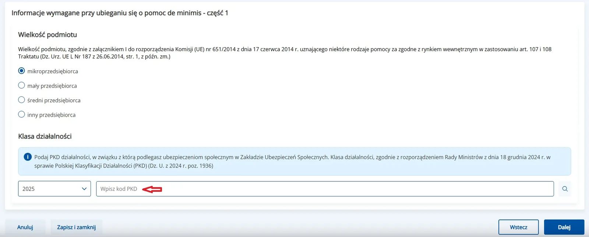
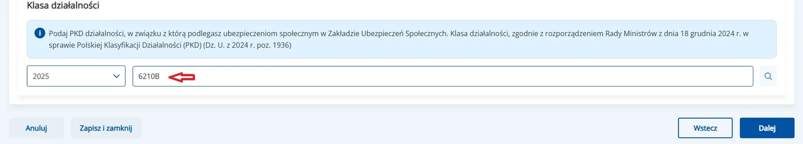
de minimis, часть 2: связи с другими предпринимателями
Экран в eZUS: «Powiązania z innymi przedsiębiorcami»
Существует ли связь между субъектом и другими предпринимателями, заключающаяся в том, что:
- a. jeden przedsiębiorca posiada większość praw głosu akcjonariuszy lub wspólników drugiego przedsiębiorcy – один предприниматель имеет большинство прав голоса акционеров или участников другого предпринимателя.
- b. jeden przedsiębiorca ma prawo wyznaczyć lub odwołać większość członków organu zarządzającego lub nadzorczego innego przedsiębiorcy – один предприниматель имеет право назначить или отозвать большинство членов руководящего или надзорного органа другого предпринимателя.
- c. jeden przedsiębiorca ma prawo wywierać dominujący wpływ na innego przedsiębiorcę zgodnie z umową lub zgodnie z jego dokumentami założycielskimi – один предприниматель имеет право оказывать доминирующее влияние на другого предпринимателя в соответствии с договором с этим предпринимателем или в соответствии с его учредительными документами.
- d. jeden przedsiębiorca, będąc akcjonariuszem lub wspólnikiem innego przedsiębiorcy lub jego członkiem, zgodnie z porozumieniem z innymi akcjonariuszami, wspólnikami lub członkami, samodzielnie kontroluje większość praw głosu – один предприниматель, который является акционером, партнером или участником другого предпринимателя, в соответствии с соглашением с другими акционерами, партнерами или участниками этого предпринимателя самостоятельно контролирует большинство прав голоса у этого предпринимателя.
- e. przedsiębiorca pozostaje w jakimkolwiek ze stosunków opisanych powyżej poprzez jednego innego przedsiębiorcę lub kilku innych przedsiębiorców – предприниматель остается в любых отношениях, описанных выше, через одного иного предпринимателя или нескольких других предпринимателей.
- Если связей нет – в каждом пункте a–e отмечаем «NIE». Если есть – «TAK». «Dalej».
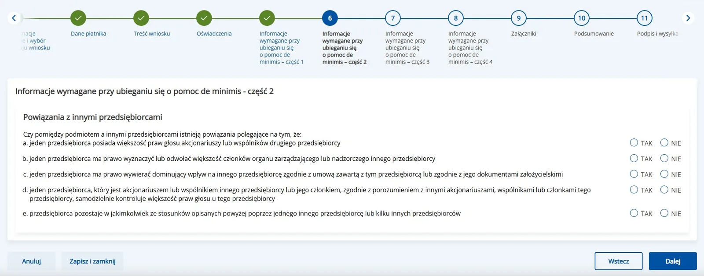
de minimis, часть 3: как возникла фирма
Экран в eZUS: «Informacje o powstaniu podmiotu»
Четыре вопроса о том, как появилась ваша фирма.
- a. powstał wskutek połączenia się innych przedsiębiorców – появилась в результате слияния.
- b. przejął innego przedsiębiorcę – принятие на (включение в ) себя другого предпринимателя.
- c. powstał w wyniku podziału innego przedsiębiorcy – возник в результате раздела.
- d. powstał w wyniku przekształcenia przedsiębiorcy – возник в результате преобразования.
- У большинства везде «NIE». «Dalej».
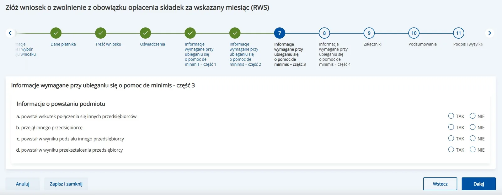
de minimis, часть 4: секторы деятельности
Экран в eZUS: «Działalność gospodarcza» – хозяйственная деятельность
Осуществляет ли предприятие предпринимательскую деятельность:
- a. w sektorze produkcji podstawowej produktów rybołówstwa i akwakultury – в секторе производства основной продукции рыболовства и аквакультуры.
- b. w dziedzinie produkcji podstawowej produktów rolnych wymienionych w załączniku I do Traktatu o funkcjonowaniu Unii Europejskiej – в области производства основной сельскохозяйственной продукции, перечисленной в приложении №1 к Договору о функционировании Европейского Союза (Traktat o funkcjonowaniu Unii Europejskiej).
- c. w dziedzinie przetwarzania i wprowadzania do obrotu produktów rolnych wymienionych w załączniku I do Traktatu o funkcjonowaniu Unii Europejskiej – в области переработки и сбыта сельскохозяйственной продукции, перечисленной в приложении №1 к Договору о функционировании Европейского Союза (Traktat o funkcjonowaniu Unii Europejskiej).
- d. w dziedzinie przetwarzania i wprowadzania do obrotu produktów rybołówstwa i akwakultury – в области обработки и сбыта продуктов рыболовства и аквакультуры.
- У большинства везде «NIE». «Dalej».
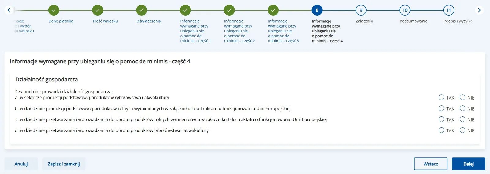
Приложения: засвядчэння, если выбирали их
Экран в eZUS: «Załączniki»
Что прикладываем – зависит от шага 4. Если там стояло «oświadczenie» – список оставляем пустым и жмём «Dalej». Если «zaświadczenia» – прикладываем сами засвядчэння: по файлу на каждую помощь de minimis. Отчёт из SUDOP сюда не годится: это только список сумм, а ZUS нужны засвядчэння от органов, которые давали помощь.
- На шаге 4 выбрали «oświadczenie» – ничего не загружаем, сразу «Dalej».
- Выбрали «zaświadczenia» – нажать на пунктирную зону загрузки.
- Выбрать файл засвядчэння и нажать «Otwórz»; повторить для каждой помощи.
- Проверить имена файлов в списке и нажать «Dalej».
Где взять засвядчэння: у органа, который дал помощь – urząd miasta или gminy, powiatowy urząd pracy и другие. Если бумаги под рукой нет, запросите дубликат в том же органе: отчёт SUDOP его не заменяет, там только суммы – они нужны, чтобы заполнить шаг 5. Лимит eZUS – около 1 МБ на файл и 5 МБ на всё заявление.
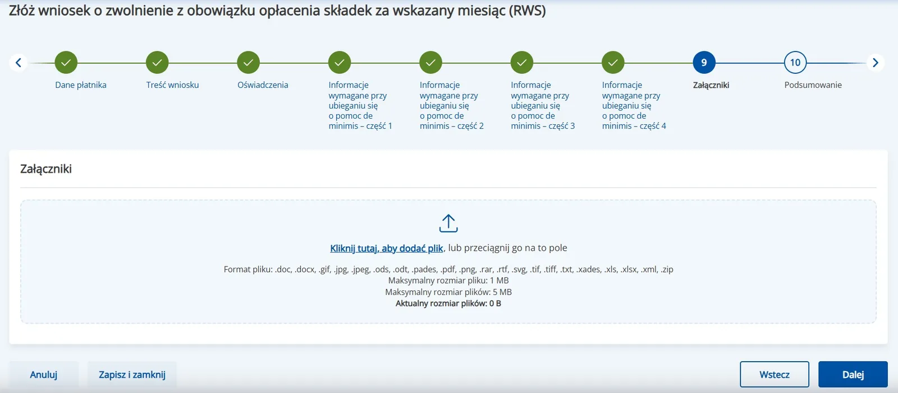
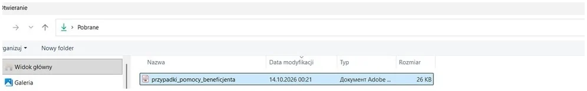
Приложения: пусто
Экран в eZUS: «Załączniki»
Первая подача: помощь de minimis раньше не получали, поэтому список файлов пустой – так и должно быть.
- Ничего не добавлять.
- «Dalej».
Итог
Экран в eZUS: «Podsumowanie»
Всё заявление на одном экране – читаем и отправляем.
- Проверить месяц и данные.
- Нажать «Podpisz i wyślij».
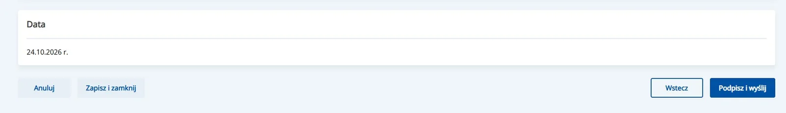
Для первой подачи сводка выглядит так же, только в «Załączniki» пусто.
Подпись и UPO
Экран в eZUS: «Podpis i UPO»
Подпись и подтверждение, что заявление ушло.
- Подписать через Profil Zaufany.
- Скачать UPO и сохранить.
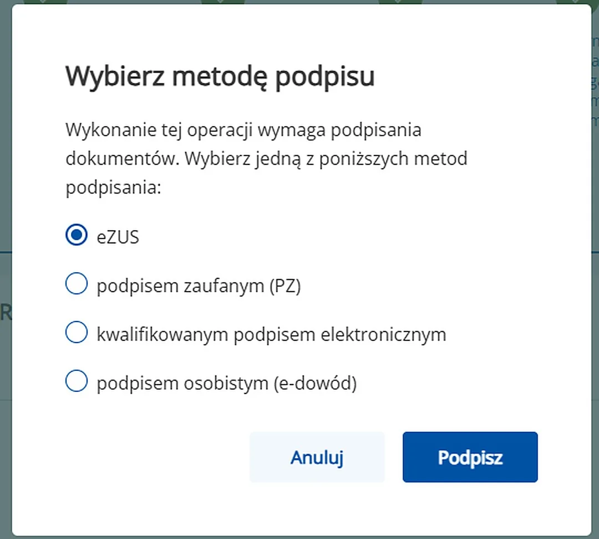
Справка из SUDOP
Статус на октябрь 2026: при повторной подаче справка из SUDOP не требуется. Она нужна затем, чтобы узнать сумму уже полученной помощи: эту сумму вписываем на шаге 5.
Экран в SUDOP: «Wyszukiwanie podmiotu»
Нужна тем, кто уже получал помощь de minimis.
- Открыть поиск по NIP: sudop.uokik.gov.pl/search/aidBeneficiary
- Ввести NIP и нажать «Pobierz nazwę».
- Отметить «tylko de minimis» и период 3 года – кнопка «3 lata wstecz» подставит даты, галочку ставим сами.
- Нажать «Wyszukaj według wybranych kryteriów» – откроется список случаев помощи.
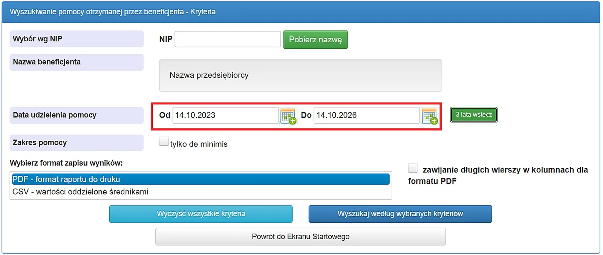
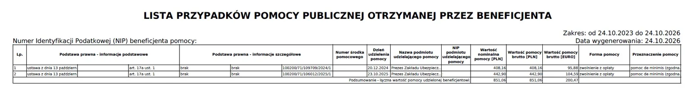
отчет в PDF
Экран в SUDOP: «Wyniki wyszukiwania»
Этот отчёт в приложения не идёт – из него берём только сумму помощи.
- Сверить «Zakres»: три года и сегодняшняя дата генерации.
- Внизу отчёта – «Podsumowanie» с суммой помощи: её и вписываем в форму.
- Сохранить файл в PDF себе – понадобится, если ZUS попросит подтверждение сумм.
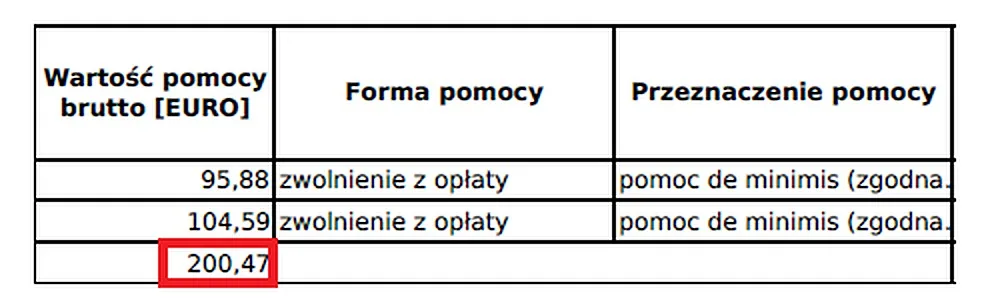
Если экран выглядит иначе
Интерфейс eZUS иногда меняет подписи. Ориентируйтесь на смысл: шаг вперед – синяя кнопка справа внизу, возврат – «Wstecz», сохранение – «Zapisz i zamknij».
Если появился экран, которого нет в инструкции, – сделайте скриншот и пришлите в бюро.
Прямые ссылки
- ZUS – вход в eZUSкнопка «Zaloguj do PUE/eZUS»
- Wakacje składkowe – правилаbiznes.gov.pl · ZUS
- SUDOP – справка de minimisсервис UOKiK, поиск по NIP
- Profil Zaufanyвход и подпись заявления
Что важно знать до начала
- Заявление подается в месяц, предшествующий месяцу каникул.
- Лимит помощи de minimis – 300 000 евро за три года.
- Если уже получали помощь de minimis, отчёт SUDOP нужен только по запросу ZUS – порядок в Д1–Д2.